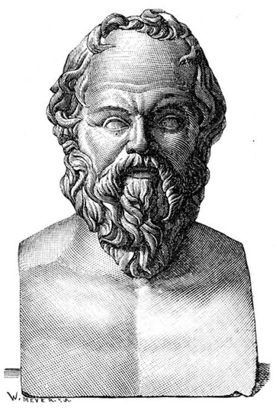
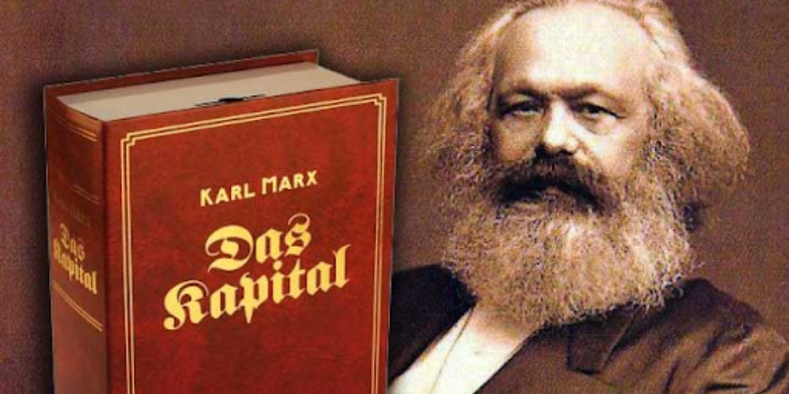

Iconografia Revolucionária
Esta galeria reúne imagens que representam a síntese entre o pensamento crítico de Sócrates e a luta pela transformação social proposta pelo socialismo científico.

Sócrates
O filósofo que revolucionou o pensamento ocidental com seu método dialético

Karl Marx
O teórico que desenvolveu a análise científica das relações de classe
Símbolo Proletário
Representa a união entre trabalhadores industriais (martelo) e agrícolas (foice)

Obras Fundamentais
Os livros que formaram a base do pensamento crítico e revolucionário
Estudo Coletivo
A educação como ferramenta de libertação de classe
Solidariedade
A união dos trabalhadores como força transformadora
Citações Inspiradoras
"A única coisa que sei é que nada sei."Sócrates
"Os filósofos até agora só interpretaram o mundo de diversas maneiras; o que importa é transformá-lo."Karl Marx
"A educação é a arma mais poderosa que você pode usar para mudar o mundo."Nelson Mandela